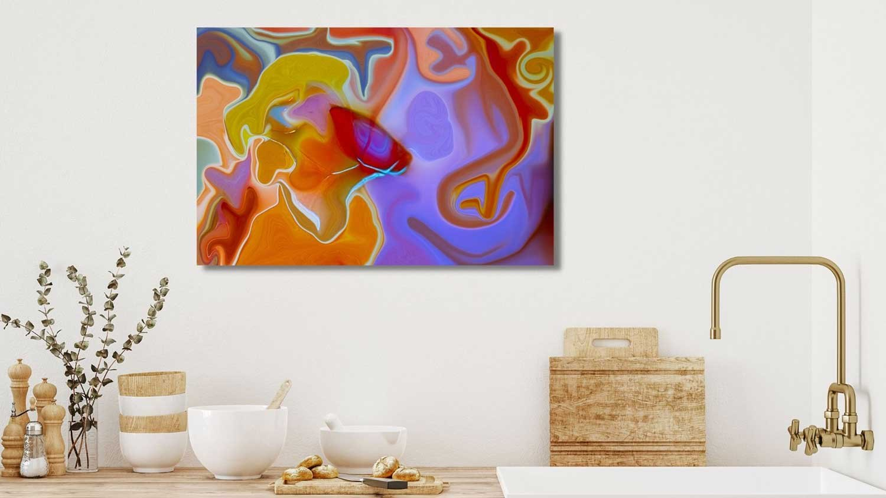

The Library · Omaste Witkowski
Why is it so HARD for Interior Designers to find the BEST art for their projects?

Many people would not guess that it’s hard for interior designers to find the best art for their projects. You would think that they always knew where to find it, but in fact they consistently struggle with this exact problem! Many of them focus on more than just new builds, remodels or entire spaces. They don’t always need art for each design.
When they do need to find art for their projects, it can be challenging to match the room style with the art style. OR the colors themselves. You might LOVE a painting or photograph but the color tones in the work don’t match. To make this even more difficult, what you see on your screen isn’t always how the colors will look off the screen.
Many artists take weeks or months to produce a new piece of work and they don’t always offer prints. So you might love an artists work BUT they don’t produce much of it. This can leave a designer in the lurch when it comes to timing. Original work can also be prohibitively expensive which can kill an interior designers budget for a single project.
Then you get to the art malls and online stores like Fine Art America, Etsy, Society 6 and more. There you can find a TON of art but frankly some of it is just not good. No one is curating these databases and the end result is thousands of people posting low quality artwork which dilutes the quality of the store as a whole.
The other big problem with these sites is that they don’t teach the artist/photographer how to correctly title, describe and keyword their work. This means that there might be amazing artists on these sites who have incredible work but they don’t describe it in a way that other people can find it!
So what is an interior designer or decorator to do? How do they find the right art for their interior designs? Many interior designers I meet are spending HOURS scrolling Instagram looking for art for their interior designs! Now Instagram is cool, and there are amazing artists on there but again, do they post their art in a way that is easy to find?

At the end of the day, and after many hours of searching, many people end up tired, frustrated and having wasted hours and hours with no results. The thing is, they just don’t know a better way. There might just be millions of pieces of art online in a huge variety of sizes, colors, styles and prices but finding the right piece is similar to finding a needle in a haystack.
Having ALL this art available does not make it EASIER for them to find just the right piece…
Nope! IT’s just flat out overwhelming for most of them but they don’t know a better way and they keep going to Instagram, Art Malls or even Google. Now as an artist and photographer this blows my mind and yet I can see it.
In my network of artists and creative people, everyone is creating and putting out content all the time! Like literally every day for some people. The problem with that is that so much of this work is not worth buying, it’s shown to the wrong people or it’s so poorly described, keyworded and titled that no one finds it…
Some creative people think that more is better and that they just need to keep putting more work out there and eventually someone will come along and buy it. This doesn’t work though because anything that is rushed out the door is not going to be the best quality AND there is not a lot of thought put into how someone will actually find it.

The other challenge many designers (and artists/photographers face) is that different art styles pair well with different interior design styles. But many people in the decorating and design space don’t understand art to the degree that they know how to seek out specific art styles to pair with specific interior design styles.
So how do you match the perfect art with the perfect art buyer and do it consistently…
There are a few easily available options.
1. Find an artist you like, who has a large portfolio of high quality work, who offers a designers discount and who also offers high quality printing options. Their work will be easy to identify and will work with multiple interior design styles. They will also be well versed in each style and are able to offer virtual interior services where you can see the art in a room before you buy it.
2. Find an art curator who’s job it is to match interior design styles with art styles and find the lowest prices for each project so that you can consistently come in on budget for your art and photography needs.
3. Partner up with an art agent who has a portfolio of artists and photographers that they work with. This person will not only help you find the best art and or photography for your projects, they will actually suggest people and work for you based on your style and what you like and use the most. Their job is to match the BEST art with the project that it is most suited for. An agent will keep track of not only the art world, but also the interior design world.
So where do you find these people?
Send me a message, I have been selling art online for more than 10 years, have a huge network of artist/photographer connections AND I just got connected with an art agent and they are doing a great job bridging the gap between my work and the people who LOVE it.
No matter what you are looking for, I can provide you a resource to help you find it!
Find your own piece with the art adventure · Ask the gallery what fits your wall